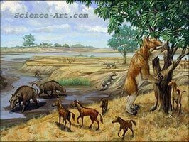
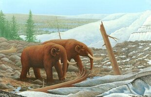

Distribution of the Wooly Mammoth at its peak population.
Mammoths and Mastodons

During the era following the extiction of the dinosaurs, the the Cenozoic era, many elephants roamed the Nebraska landscape. Gomphotheres, Stegomastodons, Mastodons, and Mammoths were the most common.The earliest elephant found in Nebraska is the Gomphothere or four-tusked elephant.
The ancestors of these elephants came over to North America from North Africa and Central Asia three to four million years ago, Corner said.Four-tuskers were present in Nebraska during the Middle and Late Miocene epoch . They are the oldest elephant known to exist in Nebraska, and were surrounded by savanna and grassland vegetation, which was present on the Miocene landscape in Nebraska. In that distant past, Nebraska was a grassy savanna. Trees and shrubs dotted the landscape. world that resembled modern-day Africa Stegomastodon existed in Nebraska during the Pliocene. They became extinct about 4 million years ago. Savanna and grassland vegetation dominated the landscape of Nebraska during the Pliocene. At the time this stegomastodon was alive, during the Pleistocene, Nebraska was much warmer. Mastodons were present in Nebraska from 2 million until about 10,000 years ago. The climate in Nebraska was much cooler and drier because of the ice age in the Northern Hemisphere, which started around 1.8 million years ago. Mastodons ate shrubs and pine trees in a grassland-dominated ecosystem. More bull dog in build than elephant. Mammoths are the most commonly found elephant fossil in Nebraska. Mammoths were present in Nebraska from ~ 2 million until about 10,000 years ago. Various species of mammoth crossed the Bering Strait land bridge about and spread throughout most of North America. The Mammoths did not reach our Nebraska, on the southern edge of the glaciers, until the late Pleistocene Epoch, about one half million years ago. The mammoths (elephants) did not reach our Nebraska, on the southern edge of the glaciers, until the late Pleistocene Epoch, about one half million years ago. But scientists are sure that they were still here when early man came into the Nebraska region, some 12 thousand years ago
 The world's largest Mammoth skeleton was found in Lincoln County, Nebraska; nicknamed "Archie." "When he was alive Archie must have been something to behold. His height, at the shoulder, was 14', and he was still growing when he died. compares with eight or nine feet for modern circus elephants. His tusks were almost 13 feet long, He is on display in the University of Nebraska State Museum's Elephant Hall.
Archie’s skeleton was famously discovered by chickens. In 1921, southwest Nebraska farmer Henry Kariger noticed that his chickens were pecking at some white minerals eroding out of a hillside. Thinking the substance would be a good source of lime for his flock, Kariger started collecting it and adding it to their feed. Eventually the hill eroded further, and Kariger realized he had something more impressive than lime deposits – it was the jaws and teeth of a giant animal. https://extinctmonsters.net/2017/12/10/the-great-mammoth-of-lincoln/"Skeletal remains of elephants have been found in all parts of Nebraska, and many have been preserved in the world famous Elephant Hall, on the campus of the University of Nebraska in Lincoln. It is estimated that there are at least 10 prehistoric elephant remains, on average, per square mile buried in Nebraska---more than there are living elephants in Africa. In 1967, to commemorate the 100th Anniversary of our state, the legislature chose the Mammoth as our State Fossil, symbolized by 'Archie, the World's Largest Elephant.'" http://www.mccookgazette.com/story/1097462 . Archie was found in Lincoln County is on display in Elephant Hall at the University of Nebraska State Museum.


Mammoths
Although the mammoth was an elephant, it was much larger than the modern elephant. The three Mammoth species found in Nebraska are the Columbian elephant, Imperial elephant and the shaggy Wooly Mammoth which is seldom found south of Nebraska.
Woolly Mammoths evolved adaptations for Arctic life like small ears and tails to minimize heat loss, a thick layer of subcutaneous fat, long thick fur, and a large fat hump behind the neck that may have been a heat source and fat reservoir during winter.
Mastodons
Mastodons were very similar in appearance to elephants and less like Mammoths. Their build was similar to current Asian elephants. Mastodons were found as far south as Florida and as far east as the New England states.
Compared to Mammoths, Mastodons had a longer, more muscler body with a flater back and shorter legs. They were not shaggy like a Mammoth. Mastodons had a low and long skull with long, slightly curved tusks which were straighter than the very curved Mammoth tusks.
Where Did They Go
.jpg)
There is still an active debate on the extinction of elephants in North America. There are three sides to the discussion. Some say they were hunted to extinction. Another side claims their extinction was the result of climate change which killed the once abundant food source. The third camp suggests that it was a combination of the two. The confusion comes from the arrival of humans at the same time that climate change was changing the landscape. Grasslands were changed to forests and other areas became hot and arid, destroying the grazing grounds of the great herbivores.